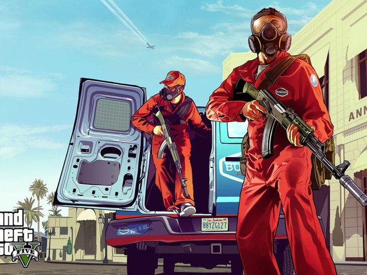

Grand Theft Auto V é um jogo eletrônico de ação-aventura[1] que pode ser jogado a partir de uma perspectiva em terceira pessoa[2] ou primeira pessoa (disponível apenas nas plataformas PlayStation 4, Xbox One e Microsoft Windows).[3] Os jogadores completam missões – cenários lineares com objetivos definidos – a fim de progredirem pela história.[4] Os jogadores podem vagar livremente pelo mundo de jogo quando não estão dentro de missões. O mundo é composto pela área rural do estado de San Andreas e pela cidade ficcional de Los Santos, com sua área total sendo bem maior do que em títulos anteriores da série.[5] O mapa pode ser explorado completamente assim que o prólogo é completado, porém a progressão na história libera mais conteúdos de jogabilidade.[6] Os jogadores são capazes de se protegerem atrás de objetos para que não tomem danos de inimigos. Os jogadores podem usar ataques corpo-a-corpo, armas de fogo e explosivos acessados através de uma roda de armamentos a fim de combaterem inimigos,[7] tendo a capacidade de navegar pelo mundo por meio de automóveis, aeronaves, barcos e a pé.[8] O jogo reintroduz tipos de veículos ausentes de Grand Theft Auto IV para poder acomodar o tamanho de seu mapa, como por exemplo aviões.[9] Sistemas de mira automática e cobertura podem ser usados a fim de ajudarem no combate contra oponentes.[10] O medidor de saúde irá se regenerar até a metade caso os jogadores sofram dano, com a vitalidade podendo ser restaurada completamente por meio de caixas de primeiros socorros ou pela ingestão de comida ou bebida. Os jogadores renascem em hospitais quando sua saúde é completamente drenada.[8] Agências de combate ao crime podem responder à infrações cometidas pelo jogador através de um medidor de "procurado".[11] Estrelas mostradas no medidor indicam o nível de procurado (por exemplo, helicópteros policiais e equipes da SWAT são enviadas contra os jogadores no nível máximo de cinco estrelas).[12] Jogadores que forem presos ou mortos durante missões podem recomeçar a partir do último ponto de salvamento.[13] Oficiais da lei irão procurar pelos jogadores caso estes deixem a área de patrulhamento. O medidor entra em esfriamento e eventualmente regride ao zero quando os jogadores se escondem do campo de visão dos policiais.[14] Existem outros meios de escapar do nível de procurado, como por exemplo alterar a cor de um veículo dentro de alguma oficina.[15] O modo um jogador permite o controle de três personagens: Michael De Santa, Trevor Philips e Franklin Clinton – criminosos cujas histórias se interconectam à medida que as missões são completadas. Algumas missões são completadas apenas com um dos personagens, enquanto outras com dois ou com os três.[16] Os jogadores podem trocar entre os protagonistas por meio de uma bússola direcional. O jogo automaticamente alterna de personagem durante missões a fim de completar certos objetivos. O avatar de um dos personagens irá piscar em vermelho na bússola se ele estiver em perigo ou necessitando de ajuda, ou em branco caso ele possuir uma vantagem estratégica.[17] Apesar dos jogadores completarem missões com qualquer um dos três protagonistas, as mais difíceis missões de assalto necessitam de cúmplices controlados pela inteligência artificial que possuem habilidades únicas, como por exemplo direção ou hacking. Os cúmplices ficam com uma parcela da recompensa em dinheiro caso sobrevivam ao assalto[18] e podem ficar disponíveis para missões futuras com melhoramentos em suas habilidades.[19] São encorajadas diferenciações nas estratégias de assaltos; em uma missão de roubo, os jogadores podem subjugar civis com um agente incapacitador ou entrarem no local com armas na mão.[20] Cada protagonista tem um conjunto de oito habilidades representadas por sua proeza em certas áreas como tiro ou direção. Cada personagem tem uma especialidade por padrão, apesar das habilidades melhorarem com o tempo de jogo.[21] A oitava habilidade "especial" determina a efetividade ao realizar uma aptidão que é única para cada personagem. Michael entra em combate bullet-time, Franklin diminui a velocidade do tempo enquanto dirige e Trevor inflige duas vezes mais dano em inimigos ao mesmo tempo que sofre metade do dano em combates.[22] Um medidor diminui enquanto a habilidade é usada e regenera-se quando os jogadores realizam ações hábeis (por exemplo, derrapar com carros enquanto Franklin ou atirar na cabeça de oponentes enquanto Michael).[23] Os jogadores podem entrar em atividades específicas como mergulhos ou jogos de golfe enquanto vagam livremente pelo mundo. Cada personagem possui um celular para entrar em contato com amigos, iniciar atividades ou acessar a internet de dentro do jogo.[24] A internet também permite que os jogadores comprem e vendam ações por meio de um mercado de ações.[25] Os jogadores podem comprar propriedades de negócios, melhorar armas e veículos no arsenal de cada personagem e customizar suas aparências ao comprar roupas, cortes de cabelo, tatuagens e joias.
Grand Theft Auto V é um jogo eletrônico de ação-aventura desenvolvido pela Rockstar North e publicado pela Rockstar Games. É o sétimo título principal da série Grand Theft Auto e foi lançado originalmente em 17 de setembro de 2013 para PlayStation 3 e Xbox 360, com remasterizações lançadas em 18 de novembro de 2014 para PlayStation 4 e Xbox One, e em 14 de abril de 2015 para Microsoft Windows. O jogo se passa no estado ficcional de San Andreas, com a história da campanha um jogador seguindo três criminosos e seus esforços para realizarem assaltos sob a pressão de uma agência governamental. O mundo aberto permite que os jogadores naveguem livremente pelas áreas rurais e urbanas de San Andreas. A jogabilidade é mostrada em uma perspectiva de primeira ou terceira pessoa e o mundo pode ser atravessado a pé ou com veículos. Os jogadores controlam três protagonistas e podem alternar entre eles durante e fora das missões. A história é centrada em sequências de assaltos, com muitas missões envolvendo a jogabilidade de tiro e direção. Um sistema de "procurado" define a resposta e agressividade das forças da lei contra os crimes cometidos pelo jogador. O modo multijogador, Grand Theft Auto Online, permite que até trinta jogadores explorem o mundo e entrem em partidas competitivas ou cooperativas. O desenvolvimento do jogo começou pouco depois do lançamento de Grand Theft Auto IV em 2008 e foi compartilhado por várias das subsidiárias da Rockstar ao redor do mundo. A equipe se influenciou por muitos de seus projetos anteriores como Red Dead Redemption e Max Payne 3, com o jogo tendo sido projetado ao redor de três protagonistas a fim de inovar a estrutura principal da série e impedir que ela estagnasse. Boa parte dos trabalhos de desenvolvimento centraram-se na criação do mundo aberto, com vários membros da equipe realizando pesquisas de campo pelo Sul da Califórnia. A trilha sonora contém músicas licenciadas e músicas originais compostas por um grupo de produtores que colaboraram no decorrer de vários anos. Grand Theft Auto V recebeu uma enorme campanha de divulgação e altas expectativas. Quebrando recordes de vendas na indústria, tornou-se o produto de entretenimento mais rapidamente vendido da história, arrecadando oitocentos milhões de dólares na estreia e alcançado um bilhão em apenas três dias. Foi aclamado pela crítica, que elogiou seu desenho de múltiplos protagonistas, o mundo aberto, apresentação e jogabilidade. O jogo rendeu controvérsias devido sua representação das mulheres e uma missão contendo tortura para extração de informações. Considerado um dos títulos mais importantes da sétima geração de consoles e como um dos melhores jogos eletrônicos criados por muitos críticos e jogadores, Grand Theft Auto V também venceu vários prêmios, incluindo o de Jogo do Ano, de diversas publicações..

Referências: Pitcher, Jenna (9 de outubro de 2013). «Grand Theft Auto 5 smashes 7 Guinness World Records». Polygon. Consultado em 25 de dezembro de 2016 Hamilton, Kirk (24 de setembro de 2013). «Five Ways You Can Make Grand Theft Auto V More Immersive». Kotaku. Consultado em 25 de dezembro de 2016 Krupa, Daniel (4 de novembro de 2014). «Grand Theft Auto 5: A New Perspective». IGN. Consultado em 25 de dezembro de 2016 Simmons, Alex (12 de novembro de 2012). «Grand Theft Auto V: Reinventing the Open-World Rulebook». IGN. Consultado em 25 de dezembro de 2016 Hussain, Tamoor (8 de novembro de 2012). «GTA V world 'is bigger than Red Dead Redemption, San Andreas and GTA 4 combined'». Computer and Video Games. Consultado em 25 de dezembro de 2016. Cópia arquivada em 10 de novembro de 2012 Simmons, Alex (13 de novembro de 2012). «Grand Theft Auto 5's Unseen Mastermind». IGN. Consultado em 25 de dezembro de 2016 Bogenn, Tim; Barba, Rick (2013). Grand Theft Auto V Signature Series Strategy Guide. Estados Unidos: BradyGames. p. 7. ISBN 9780744014679 Bogenn, Tim; Barba, Rick (2013). Grand Theft Auto V Signature Series Strategy Guide. Estados Unidos: BradyGames. p. 10. ISBN 9780744014679 Stuart, Keith (12 de novembro de 2012). «Grand Theft Auto V preview: the inside story». The Guardian. Consultado em 25 de dezembro de 2016 Hoggins, Tom (2 de maio de 2013). «Grand Theft Auto V preview». The Daily Telegraph. Consultado em 25 de dezembro de 2016 Stuart, Keith (3 de maio de 2013). «Grand Theft Auto 5 preview: Rockstar invites you to Los Santos». The Guardian. Consultado em 25 de dezembro de 2016 Hernandez, Patricia (7 de maio de 2015). «The Mystery Of GTA V's Six-Star Wanted Level». Kotaku. Consultado em 25 de dezembro de 2016 Bogenn, Tim; Barba, Rick (2013). Grand Theft Auto V Signature Series Strategy Guide. Estados Unidos: BradyGames. p. 14. ISBN 9780744014679 Sterling, Jim (16 de setembro de 2013). «Review: Grand Theft Auto V». Destructoid. Consultado em 25 de dezembro de 2016 Bogenn, Tim; Barba, Rick (2013). Grand Theft Auto V Signature Series Strategy Guide. Estados Unidos: BradyGames. p. 15. ISBN 9780744014679 Bogenn, Tim; Barba, Rick (2013). Grand Theft Auto V Signature Series Strategy Guide. Estados Unidos: BradyGames. p. 57. ISBN 9780744014679 Reilly, Luke (3 de setembro de 2013). «World's First Hands-on With Grand Theft Auto V». IGN. Consultado em 25 de dezembro de 2016 Petit, Carolyn (2 de maio de 2013). «Grand Theft Auto V: The Making of a Great Heist Sequence». GameSpot. Consultado em 25 de dezembro de 2016 Bertz, Matt (2 de maio de 2013). «The Art Of The Heist In GTA V». Game Informer. Consultado em 25 de dezembro de 2016 MacDonald, Keza (9 de julho de 2013). «What's New in the Grand Theft Auto V Gameplay Trailer». IGN. Consultado em 25 de dezembro de 2016 Weaver, Tim (3 de maio de 2013). «Preview: GTA V rewrites the open-world rulebook... again». Computer and Video Games. Consultado em 25 de dezembro de 2016. Cópia arquivada em 14 de setembro de 2013 Bertz, Matt (2 de maio de 2013). «Running And Gunning In Grand Theft Auto V». Game Informer. Consultado em 25 de dezembro de 2016 Bogenn, Tim; Barba, Rick (2013). Grand Theft Auto V Signature Series Strategy Guide. Estados Unidos: BradyGames. p. 6. ISBN 9780744014679 Aziz, Hamza (2 de maio de 2013). «Grand Theft Auto V: Everything is bigger and better». Destructoid. Consultado em 25 de dezembro de 2016 Cooper, Hollander (28 de novembro de 2014). «Grand Theft Auto V review». GamesRadar. Consultado em 25 de dezembro de 2016. Cópia arquivada em 21 de setembro de 2013 Bertz, Matt (2 de maio de 2013). «Putting Your Personal Stamp On Grand Theft Auto V». Game Informer. Consultado em 25 de dezembro de 2016 Rockstar North (2013). Grand Theft Auto V. PlayStation 3, Xbox 360. Rockstar Games. Fase: "Prólogo" Rockstar North (2013). Grand Theft Auto V. PlayStation 3, Xbox 360. Rockstar Games. Fase: "Agravantes" Rockstar North (2013). Grand Theft Auto V. PlayStation 3, Xbox 360. Rockstar Games. Fase: "Pai/Filho" Rockstar North (2013). Grand Theft Auto V. PlayStation 3, Xbox 360. Rockstar Games. Fase: "Terapia de Casais" Rockstar North (2013). Grand Theft Auto V. PlayStation 3, Xbox 360. Rockstar Games. Fase: "O Reconhecimento da Joalheria" Rockstar North (2013). Grand Theft Auto V. PlayStation 3, Xbox 360. Rockstar Games. Fase: "O Golpe à Joalheria" Rockstar North (2013). Grand Theft Auto V. PlayStation 3, Xbox 360. Rockstar Games. Fase: "Sr. Philips" Rockstar North (2013). Grand Theft Auto V. PlayStation 3, Xbox 360. Rockstar Games. Fase: "Fama ou Desgrama" Rockstar North (2013). Grand Theft Auto V. PlayStation 3, Xbox 360. Rockstar Games. Fase: "Alguém Falou em Ioga?" Rockstar North (2013). Grand Theft Auto V. PlayStation 3, Xbox 360. Rockstar Games. Fase: "O Colapso" Rockstar North (2013). Grand Theft Auto V. PlayStation 3, Xbox 360. Rockstar Games. Fase: "Safari na Quebrada" Rockstar North (2013). Grand Theft Auto V. PlayStation 3, Xbox 360. Rockstar Games. Fase: "Lamar em Perigo" Rockstar North (2013). Grand Theft Auto V. PlayStation 3, Xbox 360. Rockstar Games. Fase: "Ron Noiado" Rockstar North (2013). Grand Theft Auto V. PlayStation 3, Xbox 360. Rockstar Games. Fase: "Trevor Philips Industries" Rockstar North (2013). Grand Theft Auto V. PlayStation 3, Xbox 360. Rockstar Games. Fase: "Labirinto de Cristal" Rockstar North (2013). Grand Theft Auto V. PlayStation 3, Xbox 360. Rockstar Games. Fase: "O Golpe da Merryweather" Rockstar North (2013). Grand Theft Auto V. PlayStation 3, Xbox 360. Rockstar Games. Fase: "Leve Turbulência" Rockstar North (2013). Grand Theft Auto V. PlayStation 3, Xbox 360. Rockstar Games. Fase: "Águas Passadas" Rockstar North (2013). Grand Theft Auto V. PlayStation 3, Xbox 360. Rockstar Games. Fase: "Dois é Bom, Três é Foda" Rockstar North (2013). Grand Theft Auto V. PlayStation 3, Xbox 360. Rockstar Games. Fase: "Jogada Ensaiada" Rockstar North (2013). Grand Theft Auto V. PlayStation 3, Xbox 360. Rockstar Games. Fase: "O Golpe de Paleto Bay" Rockstar North (2013). Grand Theft Auto V. PlayStation 3, Xbox 360. Rockstar Games. Fase: "A Invasão do FIB" Rockstar North (2013). Grand Theft Auto V. PlayStation 3, Xbox 360. Rockstar Games. Fase: "Bolando um Plano" Rockstar North (2013). Grand Theft Auto V. PlayStation 3, Xbox 360. Rockstar Games. Fase: "Reunindo a Família" 2016